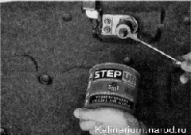
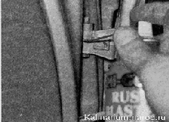
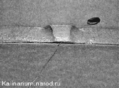

Техническое обслуживание кузоваСмазку петель и ограничителей дверей, а также очистку дренажных отверстий следует выполнять при каждом периодическом техническом обслуживании автомобиля (каждые 15 000 км пробега). Замочные скважины дверей необходимо смазывать 2—3 раза в год. Для выполнения работы потребуется отрезок проволоки диаметром 1—1,5 мм (или большая канцелярская скрепка). Очистку дренажных отверстий в порогах удобнее выполнять на смотровой канаве или эстакаде. 1. Подготавливаем автомобиль к выполнению работы. 2. Наносим пластичную смазку на фиксатор замка капота и его пружину. 3. Смазываем проникающей смазкой ось страховочного крючка. 4. Открыв дверь, впрыскиваем проникающую смазку в шарниры ее петель. Аналогично смазываем петли других дверей автомобиля. 5. Тем же препаратом смазываем замочные скважины замков дверей. 6. Наносим пластичную смазку на рабочую поверхность ограничителей дверей, пружину и шарнир лючка горловины топливного бака. Для удаления влаги из внутренних полостей в нижних частях дверей и порогах выполнены дренажные отверстия. В зависимости от года выпуска автомобиля их количество может меняться. 7. Проволокой прочищаем дренажные отверстия в дверях и порогах кузова.  |